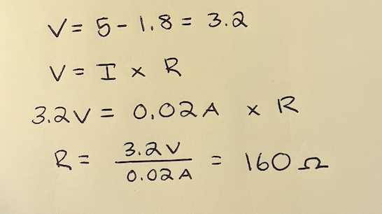

Hailey Hjort's Assignment 3!
Here are my drawings of the schematic for this circuit. I used a red LED which was connected to pin 10 and a 220 ohm
resistor and a green LED which was connected to pin 9 and a 200ohm resistor. I also used a Joystick which was connected to both the analog input A0 pin for the x values, and the analog input A1
pin for the y values.

Here is my calculation for the resistor for this circuit.
The Arduino output voltage is 5V and both the red and green LEDs have a voltage drop of 1.8V. The desired current for
the LED is 20mA or .02A. Based on my calculation of a 160 ohms I used a 220 ohm resistor to ensure
that the current in each LED wouldn't exceed 20mA. The joystick has 2 potentiometers inside of it which
form the voltage divider so I didnt need to add another external resistor on the circuit board. The joystick
voltage divider should have between 5V and 0V depending on the position and the resistance. The resting middle position
should result in 2.5V.

Here is my circuit I made. I chose to use a red LED, green LED and the joystick as my sensor. I connected the LED to pin 9 and the
joystick to pin 2 on my Arduino. The x values are of my joystick that control the green LED are connected and read through the A0 analog input pin, and the
y values that control the red LED are being read through the A1 analog input pin.
Here is a gif of the functioning circuit and a gif of example output from the serial monitor.


Here is the code snipit from the Arduino code that I wrote for the circuit. I used a green LED and connected it
to the 9 pin on my Arduino.I used a red LED and connected it to the 10 pin on my Arduino. I also used a joystick as
my sensor and connected it to the 2 pin on my Arduino. The x input values from the joystick are connected to the A0 analog input pin
and control the green LED, and the y values are connected to the A1 analog input pin and control the red LED.
I chose to have the maximum input value (1023) for x and y values correspond to the brightest output value for the LED (255).
I also chose to have any input value lower than 50 correspond to a 0 output value, turning the LED completely off.
// Creating constants for pins.
const int analogOutGreen = 9; // Analog output pin that the LED is attached to
const int analogOutRed = 10; // Analog output pin that the LED is attached to
const int x = A0; // Analog input pin for the x value
const int y = A1; // Analog input pin for the y value
// Creating variables for reading and outputting x and y values
int xval = 0; // Variable for reading x values
int yval = 0; // Variable for reading y values
int outputXValue = 0; // Variable for the x value output for the LED
int outputYValue = 0; // Variable for the y value output for the LED
void setup() {
// initialize serial communications at 9600 bps:
Serial.begin(9600);
}
void loop() {
// read the analog input values:
xval = analogRead(x); // read analog input x value
yval = analogRead(y); // read analog input y value
// print x and y input values to the serial monitor
Serial.print("x (Green) = ");
Serial.println(xval); // print input x value
Serial.print("y (red) = ");
Serial.println(yval); // print input y value
Serial.println();
// map input values to the range of the analog out values:
outputXValue = map(xval, 0, 1023, 0, 255); // map input x value to output LED value
outputYValue = map(yval, 0, 1023, 0, 255); // map input y value to output LED value
// set green output value to 0 if the x output value has been mapped to less than 50
if (outputXValue < 50) {
outputXValue = 0; // set output x value to 0
}
// set red output value to 0 if the y output value has been mapped to less than 50
if (outputYValue < 50) {
outputYValue = 0; // set output y value to 0
}
// change the analog output value for the LED:
analogWrite(analogOutGreen, outputXValue); // change LED output for x value
analogWrite(analogOutRed, outputYValue); // change LED output for y value
// wait 2 milliseconds before the next loop for the analog-to-digital
// converter to settle after the last reading
delay(2);
}
1. In your voltage divider, can the variable resistor be either R1 or R2 or does it need to be one or the other?
Justify your answer with example calculations.
In my voltage divider, the variable resistor can not be either R1 or R2. It must be R2 so that with the most minimal resistance (0), the
out voltage is 0 and the LED wont be on, and with increased resistance the voltage increases. These calculations show how the
voltage changes with respect to the varying resistence depending on if the variable resistor is R1 or R2.
The first photo shows how if the variable resistor is R1, then with increased resistance, there is a decrease in voltage.
The second photo shows how if the variable resistor is R2, then with increased resistance, the voltage increases.
2. Here is my voltage graph showing the voltage over time of my voltage divider throughout the time in the gif. The voltage divider moves between 5V and 0V
depending on the position of the joystick and the varying resistance. The middle resting postion of the joystick results in 2.5V from the divider.

3. My map code would have to change to be: map(input, 0, 65535, 0, 1023). The new 10-bit PWM would allow it to handle output values from 0 to 1023, and the
16-bit analog-to-digital converter would allow it to handle input values from 0 to 65535. The new map() function would need to accomodate these new values
and connect the appropriate input values to their output values.